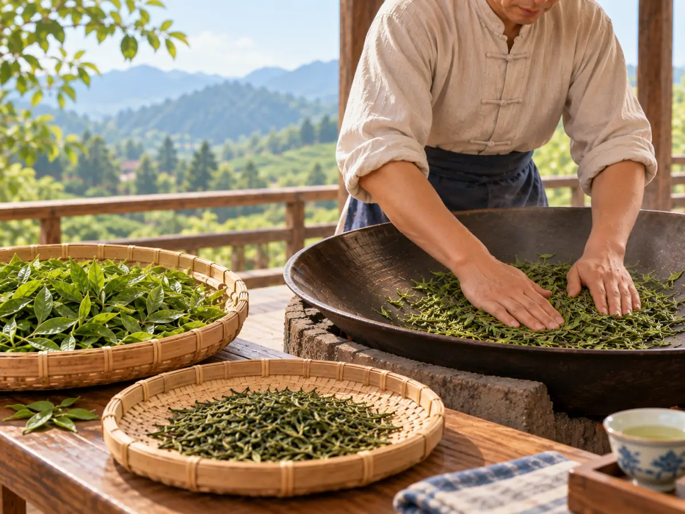
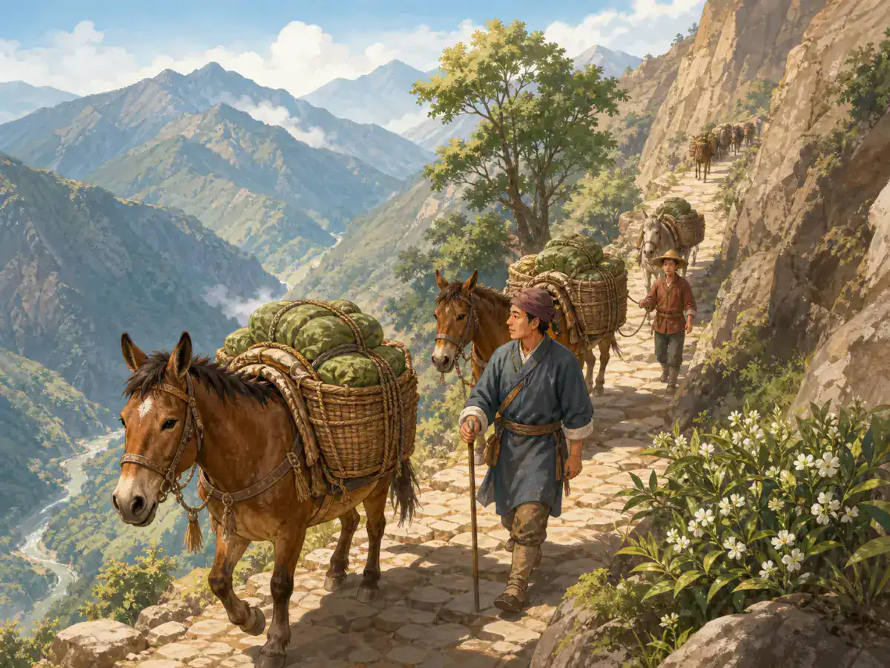

从茶树到茶杯：中国茶的故事
From Leaf to Cup: The Story of Chinese Tea
Page 1
先看看杯子里面
Look Into the Glass

In a clear glass, some green tea leaves float near the surface while others open and settle toward the bottom.
如果一个美国小朋友想到 tea，脑子里出现的是一个小小的茶包，那么第一次看到中国人泡绿茶，可能会觉得很不一样。杯子里没有茶包。茶叶就直接在水里。刚倒进热水时，有些叶子漂在上面。慢慢地，它们吸进水，舒展开来，在透明的玻璃杯里上下浮动，最后有些轻轻落到杯底。
像Xīhú Lóngjǐng · 杭州西湖一带以扁平叶形闻名的绿茶。这样的细嫩绿茶，经常可以直接用透明玻璃杯冲泡。这样不但能喝茶，还能看着茶叶在水中慢慢舒展。有人把这样的过程叫作“茶舞”。看茶叶其实很有意思，因为不同的绿茶，叶子可以完全不一样。一种扁扁平平，一种卷成细细的小螺，可它们都是绿茶。
中国人喝绿茶的传统已经延续了很多世纪，比红茶出现得早得多。直到今天，绿茶仍然是中国国内销量最大的茶类，许多最有名的春茶也都是绿茶。所以，我们先从两杯完全不同的绿茶开始。
If your idea of tea begins with a little paper tea bag, a cup of Chinese green tea can look quite different. There may be no bag at all. The leaves are right there in the water, floating near the top at first, slowly opening, turning, and settling lower in the glass.
For fine green teas such as Xīhú Lóngjǐng · 西湖龙井 · The flat-leaf green tea closely associated with West Lake in Hangzhou., a clear glass is a common way to brew the tea because you can watch the leaves change as they soak. In China, people sometimes call this movement a “tea dance.” Looking at the leaves is part of the fun, because those leaves do not all look alike. One may be long and flat. Another may curl into a tiny spiral. Both can be green tea, made from the same kind of tea plant.
Green tea has been part of Chinese tea drinking for centuries, long before black tea appeared, and it is still the largest tea category sold inside China today. Many of China’s best-known spring teas are green teas. So let’s begin with two leaves in two glasses.
Page 2
扁扁的龙井，卷卷的碧螺春
Flat Like Longjing, Curled Like Biluochun

A tea maker presses and turns leaves by hand in a large wok beside bamboo trays holding fresh and processed leaves.
春天到了Hángzhōu · 浙江省省会，西湖和龙井茶都与这里关系密切。Xī Hú · 杭州著名的湖泊，也是许多传说和诗画的背景。边，采茶人开始采下嫩芽和嫩叶。传统的西湖龙井做好以前，这些鲜叶要进入热锅。炒茶人的手不停地翻动茶叶。抖、推、压、磨，不同的时候要用不同的动作，锅里的温度也要一直注意。
等茶叶从锅里出来，它已经和树上的鲜叶完全不同了。龙井最容易认的样子，就是一片片扁平、光滑、细长的叶子。这个形状不是茶树自己长出来的。是制茶人的手做出来的。
再往北走到Sūzhōu · 江苏的城市，以园林、运河和传统工艺闻名。Tàihú · 位于江南的大型淡水湖，苏州和无锡都在湖边。边，又有一种特别有名的绿茶——Bìluóchūn · 产自苏州太湖一带、叶片卷曲的著名绿茶。。碧螺春从锅里出来，却一点也不像龙井。制茶人趁着茶叶还热，不停揉制，让它慢慢卷成细细的小螺，上面还带着一层浅色的茸毛。“碧”是青绿色，“螺”是螺蛳，“春”当然就是春天。这个名字放在它身上，刚刚好。碧螺春的茶园也很特别。传统上，洞庭山的茶树可以和枇杷、梅子、柑橘等果树一起生长，而不是孤零零地排成一大片。
把龙井和碧螺春放在一起，一边扁扁直直，一边细细卷曲，很难相信它们都是绿茶。这就是茶很有意思的地方。茶叶从树上摘下来以后，故事才真正开始。
Spring is an important season for Xihu Longjing, or Dragon Well tea. After tender leaves are picked around Xī Hú · 西湖 · The famous lake in Hangzhou that appears in many poems, paintings, and legends. in Hángzhōu · 杭州 · The capital of Zhejiang, closely associated with West Lake and Dragon Well tea., traditional tea makers work them in a heated wok. Their hands keep moving across the warm surface, using different motions to toss, press, push, smooth, and shape the leaves.
When the work is finished, Longjing is easy to recognize. The dried leaves are flat, smooth, and slender. That shape did not simply grow on the tea bush. The tea maker made it.
Now travel to the hills around Tàihú · 太湖 · A large freshwater lake in Jiangnan, bordered by cities including Suzhou and Wuxi. near Sūzhōu · 苏州 · A city in Jiangsu famous for gardens, canals, and traditional crafts.. Here another famous green tea, Bìluóchūn · 碧螺春 · A famous curled green tea from the Lake Tai area near Suzhou., comes out of the wok looking completely different. Biluochun leaves are worked while they are warm, gradually curling into fine little spirals covered with pale hairs. Its name fits the shape beautifully: bì suggests jade-green, luó means snail, and chūn means spring. The finished tea looks a little like tiny green snail shells. Traditional Biluochun tea gardens are interesting too. Tea bushes can grow among fruit trees such as loquat, plum, and citrus, rather than standing alone in endless rows.
Put Longjing and Biluochun beside each other and you can already see something important about tea: picking the leaf is only the beginning. What happens next changes almost everything.
Page 3
绿茶为什么还是绿的？
Why Does Green Tea Stay Green?
鲜茶叶一离开茶树，就会慢慢发生变化。如果放得久一些，叶子的颜色会越来越深，有一点像苹果切开以后，原本浅色的果肉慢慢变黄、变褐。
做绿茶的人不会让这种变化一直继续下去。他们会比较早给茶叶加热。龙井是在热锅里完成这个重要步骤，不同绿茶还有不同的做法。经过加热以后，叶子里的变化很快慢下来，茶叶因此能保留更多绿色，也保留人们喜欢的清鲜味道。
这也是中国春茶很特别的地方之一。喝茶的人不只在意杯子里的味道，也会看叶子的颜色和形状，感受刚刚过去不久的春天。透明玻璃杯里的那些嫩叶，正好让人看见制茶人努力留下来的东西。
可是后来，中国的制茶人还发现了另一条路。如果不那么早把变化停下来，会怎么样？
Once a tea leaf is picked, it begins to change. Leave it alone long enough and the leaf gradually darkens, a little like the cut side of an apple changing color in the air.
Green-tea makers do not let that change continue very far. They heat the leaves fairly early in the process. With Longjing, that heat comes from the wok. With other green teas, the exact method may be different. The result is tea that keeps more of the fresh green color and flavors people expect from green tea.
This is part of what makes spring green tea so special in China. People are interested not only in the finished drink, but also in the young leaves, their color and shape, and the fresh character of the new season. When those leaves open inside a glass, you can see much of what the tea maker worked to preserve.
But Chinese tea makers eventually discovered something else. What if you do not stop the leaf so early?
Page 4
绿色的叶子，后来变成了红茶
When Green Leaves Become Red Tea
红茶在中国茶的历史里出现得比较晚。到了大约四百年前，中国的制茶人已经开始制作一种新的茶：鲜叶采下来以后，不急着像绿茶那样很早加热，而是让叶子萎凋、揉制，继续发生更多变化，再把它干燥。叶子的颜色越来越深，泡出来的茶汤也变成了更深的红褐色。
英文把这种茶叫 black tea。中文却叫它红茶。为什么一个说黑，一个说红？英文更注意干茶深黑的颜色，中国人看的则更多是泡出来以后红亮的茶汤。
最有意思的是，绿茶和红茶并不需要来自两种完全不同的茶树。同样是茶树上的叶子，摘下来以后怎么处理，就可以让它们走向完全不同的结果。比较早加热，叶子能留下更多绿色；让它继续发生更多变化，再经过干燥，就可以做成红茶。
茶包和绿茶、红茶的区别其实没有关系。茶包只是一种装茶的方法。在中国，好的红茶也常常直接用散茶冲泡，和绿茶一样可以看到真正的茶叶。做好以后的茶，还有另一段旅程。这一次，它真的要上路了。
Black tea came much later in Chinese tea history. By around the seventeenth century, Chinese tea makers were producing teas in which the leaves were allowed to wither and change much farther before they were dried. The leaves became darker, and the brewed tea took on deeper reddish-brown colors.
That created what English speakers call black tea. Chinese has a different name: hóngchá, or red tea. Why the two colors? English traditionally focuses on the dark dried leaves. Chinese focuses on the reddish color of the tea in the cup.
The interesting part is that green tea and black tea do not need to come from two completely different tea plants. What happens after the leaves are picked can send them in very different directions. Heat the leaves early, and they can stay greener. Let them change much farther before drying, and they can become black tea.
A tea bag has nothing to do with that difference. Tea bags are simply one way of packaging tea. In China, good black tea is also often brewed as loose leaves, just as green tea is. The leaves have changed. Now they are ready to go somewhere else.
Page 5
茶开始爬山
Tea Climbs the Mountains

Horses and mules carry bundles along a narrow, steep mountain path.
不是所有茶都会留在茶山附近。很长时间里，中国西南产茶地区的茶会沿着一条又一条山路，向青藏高原运送。今天，人们常把这些古老道路合称为Chá Mǎ Gǔdào · 把中国西南茶区与青藏高原连接起来的多条旧交通路线。。
它并不是地图上一条笔直的大路，而是一张很大的道路网络。山谷、河流、城镇和一个又一个高高的山口，把不同地方连接起来。路上走的不只有茶和马，还有盐、羊毛、药材、布匹和各种生活用品。
这样远的路，松散的茶叶并不好带。人们可以把茶压成结实的茶饼、茶砖，包好以后，一块一块叠起来运输。有些路上可以用马和骡子驮茶。可到了特别陡、特别窄的山路，连牲畜都不好走，茶就只能靠人背。
Sìchuān · 中国西南省份，拥有大面积的大熊猫山林栖息地。一些古老的运茶道路上，背夫休息时会用一根木杖撑住背后的重担，这样不需要每次都把沉重的茶包卸下来。一代又一代的人从同样的地方经过，木杖一次又一次撑在路边的石头上。桌上一杯安安静静的茶，很难让人想到这样的山路。可是，有些茶在来到喝茶的人手里以前，真的走过很远。
Not every cup of tea was drunk near the place where the leaves grew. For centuries, tea traveled from the tea-growing regions of southwestern China toward the Tibetan Plateau. The old routes are now often called the Chá Mǎ Gǔdào · 茶马古道 · Old routes that carried tea between southwestern China and the Tibetan Plateau., the Tea Horse Roads.
They were not one single road. They were a network of mountain paths running through towns, valleys, river crossings, and high passes. Tea was one of the most important things moving along them, along with horses, salt, wool, medicines, cloth, and many other goods.
For a long journey like this, loose leaves were not always convenient. Tea could be pressed into firm cakes or bricks that were easier to stack, wrap, and carry. Sometimes horses or mules carried the loads. On steep sections where animals had trouble passing, people carried tea themselves.
Along one old route in Sìchuān · 四川 · A southwestern Chinese province containing extensive mountain habitat for giant pandas., tea porters used wooden staffs to help support their heavy loads when they stopped to rest. They could lean the load onto the staff without taking everything off their backs. Again and again, the staffs struck the same resting stones as generations of porters passed through. A quiet cup of tea on a table does not look very adventurous. The tea that reached it sometimes had been.
Page 6
路的另一头
At the Other End of the Road
茶到了新的地方，也不会永远保持原来的喝法。在青藏高原，砖茶进入了当地人的饮食生活。茶可以煮得很浓，再加入酥油和盐，变成热腾腾的酥油茶。
这时候，再回头看看开头那一杯绿茶，就会发现同一种植物已经走出了多少不同的样子。
在杭州，制茶人的双手把叶子做成扁平的龙井；到了苏州太湖边，另一种手法又做出了卷卷的碧螺春；让鲜叶发生更多变化，可以做出红茶；把茶压成结实的茶砖，送过一条条山路，到了新的地方，人们又有了完全不同的喝法。
最后，再看一眼透明玻璃杯。原本浮在上面的茶叶已经吸足了水，慢慢舒展开来，有些安静地落到了杯底。杯子里的叶子当然来自茶树。可是它们最后变成什么样，是人们一代又一代慢慢学会的。
When tea reached the Tibetan Plateau, people did not have to drink it the same way it was drunk in Hangzhou or Suzhou. Tea became part of local food traditions. Brick tea could be boiled strong and combined with butter and salt to make butter tea, a warm drink suited to a very different place and way of life.
So by the time tea reached the other end of the mountain road, people had changed it again. That is one of the most interesting things about Chinese tea.
Start with a leaf growing on a tea bush. In Hangzhou, skilled hands can turn it into flat Longjing. Near Lake Tai, another method creates the curled leaves of Biluochun. Let the leaf change farther, and it can become red tea. Press tea into a brick and send it across mountain roads, and another community may make an entirely different drink from it.
Now look back into that clear glass. The leaves are no longer floating near the top. They have absorbed the water and opened, and some are resting quietly near the bottom. You are not just looking at leaves that someone picked. You are looking at what people learned to make from them.